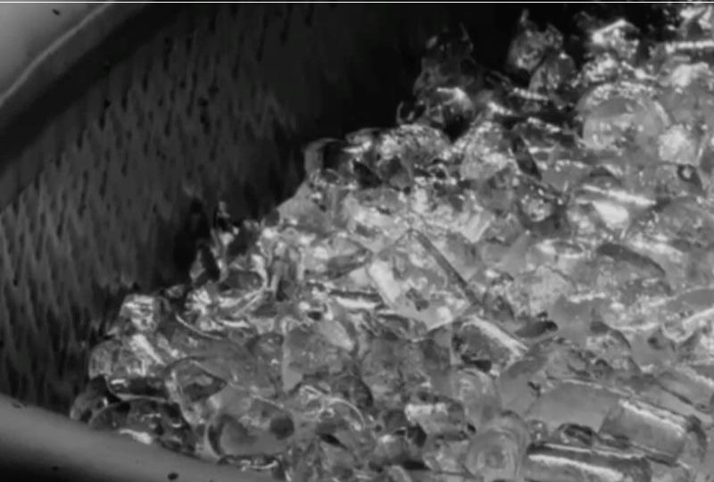
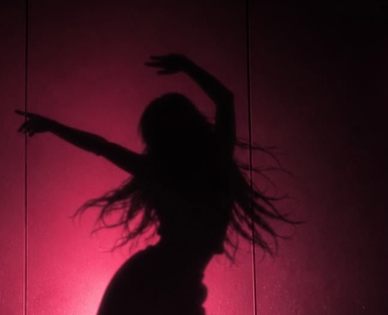

Sauna, steam and a 3-degree plunge — the oldest classroom for learning what your body can take. Heat teaches patience. Cold teaches gratitude. The wing at the back of the club where the loudest thing is your own heartbeat.
Ritual 01 — Sauna
Sit with the heat until it becomes quiet.
Eighty degrees of cedar-scented honesty. The first minutes argue with you; somewhere around minute ten, the argument ends. Bring water. Bring patience. Leave your phone in the locker — it can't sweat.

remedy wing — sauna, evening
Ritual 02 — Cold plunge
Three minutes at three degrees.
The tub doesn't negotiate. In you go, breath shortens, world shrinks to the next exhale — and you come out owning a small victory nobody can sell you.
remedy wing — the tub, 3°
Ritual 03 — The long rest
Then do absolutely nothing. Properly.
Robes, low light, the lounge's slowest corner. Recovery is a skill the culture takes seriously — the members who rest best train best. The sauna tier lists who lasts longest; the sofa ranks no one.

remedy wing — afterglow
Train hot. Rest cold. Live warm.
The remedy wing comes with every membership. First week free — enough time to learn the ritual properly, not just survive it.